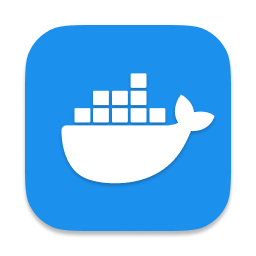
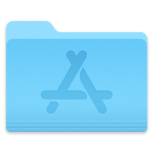

Own all your data
Run it as a Docker web app, use one-off CLI commands, or automate with APIs while keeping private and public material under your own policy.
Open-source self-hosted web archiving
ArchiveBox saves websites, bookmarks, RSS feeds, social posts, media, source code, and research material in durable files like HTML, PDF, PNG, TXT, JSON, WARC, MP4, and SQLite.


# Docker Compose is the recommended setup $ mkdir -p ~/archivebox/data && cd ~/archivebox $ curl -fsSL 'https://docker-compose.archivebox.io' > docker-compose.yml $ docker compose up -d --wait -> initialized ./data/index.sqlite3 ok listening on http://127.0.0.1:8000 $


Browse and save from any device.
Free, self-hosted, 0 analytics.
Why ArchiveBox
Run it as a Docker web app, use one-off CLI commands, or automate with APIs while keeping private and public material under your own policy.

Import URLs from bookmarks, browser history, feeds, and bookmarking apps, or text files. Save links with our browser extension, Mac and iPhone share menus, Siri, and Shortcuts.

ArchiveBox can import new URLs and capture snapshots on a schedule. Compare snapshots over time to see how sites have changed.
Snapshots are stored as ordinary files and folders, with metadata in SQLite and JSON. You can browse the collection without depending on a hosted service.
Who it is for
Save bookmarks, browser history, RSS feeds, social media, form content, videos, podcasts, music, photos, and personal knowledge collections.


Keep copies of articles, source material, and public records, even after the original pages change or disappear.

Support OSINT, social media research, AI-powered research agents, libraries, governments, and collection-building teams.

Get ArchiveBox
Choose how you want to run your archive. Docker Compose is recommended for most installs.

Docker Composedocker-compose.ymlInstall Docker first.
mkdir -p ~/archivebox/data && cd ~/archivebox
curl -fsSL 'https://docker-compose.archivebox.io' > docker-compose.ymldocker compose pull
docker compose up -d --waitA new collection initializes automatically.
Open the admin UI to create your first admin account and finish the setup wizard. On a remote server, open /admin/ on its hostname or IP instead.
docker compose exec archivebox archivebox add 'https://example.com'
Applications
Download ArchiveBox Server.app, move it to Applications, and open it.
Create an admin account and generate an API key.
Use the Web UI or ArchiveBox.app. Connect the mobile app, browser extension, and other clients with your server URL and API key.
Install Docker first.
mkdir -p ~/archivebox/data && cd ~/archivebox/data
docker run -d --name archivebox -v "$PWD:/data" -p 8000:8000 archivebox/archivebox:devOpen the admin UI to create your first admin account and finish the setup wizard. On a remote server, open /admin/ on its hostname or IP instead.
docker exec archivebox archivebox add 'https://example.com'curl get.archivebox.io
| shcurl -fsSL 'https://get.archivebox.io' | bashYou can read the script before running it.
Follow the installer’s instructions to start using your collection.
Open the admin UI to create your first admin account and finish the setup wizard. On a remote server, open /admin/ on its hostname or IP instead.
 pip / uv
pip / uvInstall uv first.
uv tool install --python 3.13 --prerelease explicit --upgrade 'archivebox>=0.9.0rc0,<0.10'
archivebox versionmkdir -p ~/archivebox/data && cd ~/archivebox/data
archivebox init
archivebox install
archivebox server 0.0.0.0:8000Open the admin UI to create your first admin account and finish the setup wizard. On a remote server, open /admin/ on its hostname or IP instead.
 apt
aptecho 'deb [trusted=yes] https://archivebox.github.io/debian-archivebox dev main' | sudo tee /etc/apt/sources.list.d/archivebox.list
sudo apt update
sudo apt install archivebox
(cd /tmp && archivebox version)mkdir -p ~/archivebox/data && cd ~/archivebox/data
archivebox init
sudo archivebox install
archivebox server 0.0.0.0:8000Open the admin UI to create your first admin account and finish the setup wizard. On a remote server, open /admin/ on its hostname or IP instead.
 Homebrew
HomebrewInstall Homebrew first. Run these commands as your normal user, without sudo.
brew tap archivebox/archivebox
brew trust archivebox/archivebox
brew install archivebox
archivebox versionmkdir -p ~/archivebox/data && cd ~/archivebox/data
archivebox init
archivebox install
archivebox server 0.0.0.0:8000Open the admin UI to create your first admin account and finish the setup wizard. On a remote server, open /admin/ on its hostname or IP instead.
 Arch Linux
Arch Linux FreeBSD
FreeBSD Nix
NixCommunity packages may lag behind the Docker and Python releases.
yay -S archiveboxFreeBSD (uv shortcut)
curl -fsSL 'https://get.archivebox.io' | bashnix-env --install archiveboxguix install archiveboxFollow your package’s setup instructions, then use the CLI usage guide to initialize and manage your archive.
Download Docker Desktop and start it on your computer.
Follow the Windows / Linux app setup instructions.
This is an alpha project; contributors are welcome.
Follow the platform’s installation guide, configure persistent storage, then open the app to finish setup.
For TrueNAS, see the README’s platform notes before choosing an integration.
Check the provider’s current plans, supported versions, and storage options.
Use the provider’s ArchiveBox deployment flow, then open your instance to create an admin account. For an unmanaged VPS, follow the Docker Compose quickstart on your server.

Open the extension’s Configuration page, enter your server URL and API key, then test the connection. Use one of the server install tabs if you don’t have a server yet.
Open a page, click the ArchiveBox extension, and add your tags. You can also import bookmarks and history from the extension’s options.
Configuration
Browse plugins and extractors ↗
ArchiveBox can be configured with environment variables, the archivebox config CLI, or by editing ./ArchiveBox.conf. The same configuration model works in Docker, Docker Compose, bare-metal installs, scheduled jobs, and one-off CLI runs.
Use TIMEOUT for slow networks, CHECK_SSL_VALIDITY for sites with broken certificates, PUBLIC_INDEX, PUBLIC_SNAPSHOTS, and PUBLIC_ADD_VIEW for publishing policy, and browser user-agent settings for sites that block obvious bots.
For authenticated or difficult sites, review CHROME_USER_DATA_DIR, COOKIES_FILE, CHROME_USER_AGENT, WGET_USER_AGENT, and CURL_USER_AGENT. Public archive operators should also configure instance branding and contact details with settings like FOOTER_INFO and CUSTOM_TEMPLATES_DIR.
$ archivebox config # view full config $ archivebox config --get CHROME_BINARY $ archivebox config --set TIMEOUT=240 $ archivebox config --set PUBLIC_INDEX=False $ env CHROME_BINARY=chromium archivebox add 'https://example.com'
ArchiveBox uses standard tools like Chrome or Chromium, wget, curl, yt-dlp, git, SingleFile, Readability, and article parsers. Docker bundles these dependencies for easier upgrades and better isolation; non-Docker installs can run archivebox install and archivebox --version to check what is available.
Inputs and outputs

Archive one URL at a time or schedule imports from bookmarks, browser history, RSS, JSON, CSV, TXT, SQL, HTML, Markdown, Pocket, Pinboard, Instapaper, Shaarli, Wallabag, and more.

Each snapshot can include original HTML, rendered single-file HTML, PDF, screenshot PNG, WARC, title, article text, favicon, headers, media, subtitles, metadata, thumbnails, and git clones.
Manage the same collection through the Web UI, CLI, REST API, Python API, SQLite, or the data folder itself. Use whichever fits your workflow.
Disk layout, exporting, and security
Your captures are ordinary HTML, images, PDFs, and media files. Open them from Finder or your file manager, search them with your own tools, and back them up wherever you like.
Each snapshot has a folder for every capture method. HTML lives in folders such as dom/ and singlefile/; images, PDFs, and media have their own folders too.
Snapshot metadata is saved alongside the outputs. Your collection’s database and configuration live outside the individual snapshot folders.
You can export the archive index as static HTML, JSON, or CSV with archivebox list so collections can be reviewed without running the web server. Keep generated exports next to the archive/ folder so relative snapshot paths continue to work.
$ archivebox list --html --with-headers > index.html $ archivebox list --json --with-headers > index.json $ archivebox list --csv=timestamp,url,title > index.csv

Archive private URLs, paywalled pages, unlisted media, and Google Docs using an imported Chrome profile or a dedicated browser persona. Choose which captures stay private and who can access them.
Restrict public access with PUBLIC_INDEX=False, PERMISSIONS=private, and PUBLIC_ADD_VIEW=False, then create authenticated users with archivebox manage createsuperuser.

ArchiveBox uses a Chrome browser during archiving to run JavaScript and capture the rendered page.
ArchiveWeb.page records pages for replay, including their scripts and network responses. Replay captured pages with JavaScript using ReplayWeb.page, Webrecorder’s archive viewer.

ArchiveBox can use roughly 1 GB to 50 GB per 1,000 snapshots depending on media, video, audio, and extractor settings. Tune YTDLP_ENABLED and YTDLP_MAX_SIZE for media-heavy collections.
Keep index.sqlite3 on local storage or SSD when possible. Large archive/ folders can live on NFS, SMB, FUSE, S3-backed, or HDD storage, but Docker and fileshare setups may need ownership and root-squash adjustments. Avoid older filesystems like EXT3 or FAT for very large archives.
Background and motivation
ArchiveBox exists because link rot, platform churn, censorship, and disappearing media routinely erase useful knowledge. The project aims to make the web content you care about viewable with common software in 50 to 100 years, without requiring ArchiveBox or a hosted replay service to understand your files.
Centralized public archives are essential, but not every page belongs in a global public service. ArchiveBox lets individuals and organizations save public or private material they can access, keep it locally or within their institution, and decide what to publish case by case.
Use the Web UI for browsing, the CLI and API for automation, and ordinary files for backups and exports.
Responsible archiving depends on your jurisdiction, your use case, and your publishing policy. ArchiveBox is a tool; operators remain responsible for handling private data, copyright, DMCA or GDPR requests, and local legal requirements.
Public instances should publish contact and removal information, avoid monetizing copied content, and review the security and publishing documentation before exposing snapshots to anonymous viewers.
Looking for specialized crawling, replay, or bookmark management? Explore these other web archiving projects.
{kind=link}